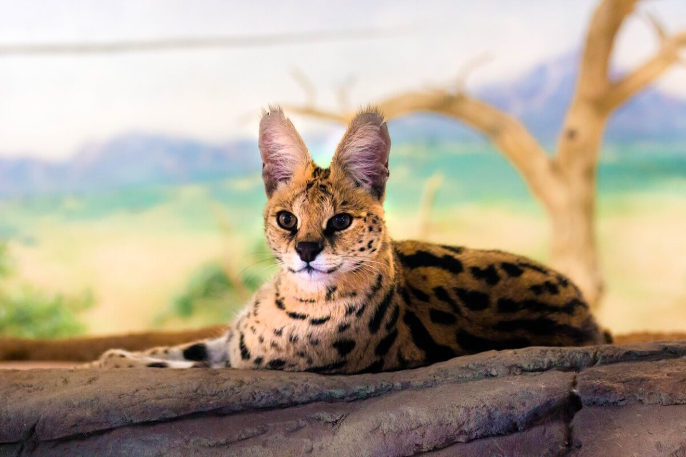
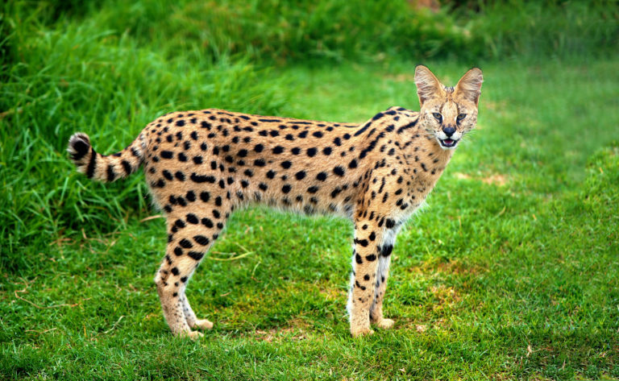

Es un félido de tamaño medio, siendo los machos de mayor tamaño que las hembras. Mide entre 67 y 100cm, más 24 a 45cm de la cola y un peso de 8 a 18kg. Es de constitución esbelta, con cola no muy larga, cabeza pequeña en relación al resto del cuerpo y orejas grandes. Destacan sus largas patas, que le permiten ver mejor en las praderas de hierbas altas donde vive más frecuentemente, y su pelaje amarillento con motas negras. Son buenos corredores y, aunque no suelen subirse a los árboles, pueden escalar bastante bien. En las zonas boscosas, sobre todo en las montañas, no son infrecuentes los individuos melánicos.
Aunque abunda más en las zonas de matorral, se encuentra presente también en sabanas, selvas y semidesiertos, con lo que su distribución se extiende por todo el continente africano con la excepción de la zonas desérticas y buena parte de Sudáfrica, donde se extinguió la subespecie local (L.s.serval) debido a la caza excesiva. La subespecie que habita al norte del Sahara (L.s.constantinus) probablemente se encuentre extinta, siendo sus últimas citas en Argelia de 1880 o quizá de 1930.3 Los servales presentes en Túnez proceden de reintroducciones hechas con ejemplares subsaharianos.
El serval es un depredador que se alimenta de pequeños animales, al igual que la mayor parte de los felinos. Sus presas más comunes son roedores y aves de tamaño medio, excepcionalmente algunas especies de antílopes.4 A su vez, son cazados ocasionalmente por leopardos y con mucha más frecuencia por el hombre, pues su piel se considera muy valiosa a lo largo y ancho de África. Las hembras paren de 2 a 4 crías por camada, tras un período de gestación de entre 60 y 65 días,4 que crían en solitario en una madriguera abandonada por otro animal, con frecuencia el cerdo hormiguero. Los servales jóvenes pueden ser domesticados, pero son difíciles de mantener en cautividad porque no suelen reconocer la jerarquía impuesta por sus dueños; a pesar de ello, cada vez se les ve más como mascotas exóticas en Estados Unidos. En este país se han producido cruces exitosos de servales con caracales, unos felinos ligeramente emparentados, e incluso con gatos domésticos, lo que ha originado una nueva y rara raza de felinos domésticos, los gatos «Savannah».
El serval es nocturno, por lo que caza sobre todo por la noche, a no ser que sea perturbado por la actividad humana o de la presencia de depredadores nocturnos más grandes. A pesar de que está especializado en roedores, es un depredador oportunista cuya dieta incluye también aves, liebres, damanes, reptiles, insectos, peces y ranas. Más del 90% de las presas del serval pesa menos de 200g. El serval come muy rápido, a veces demasiado rápido, causando que se atragante y regurgite debido a la obstrucción de la garganta. Normalmente caza y se alimenta de pequeñas presas de las que devora todo. Con presas más grandes evita los órganos e intestinos junto con piel, plumas, picos, patas o pezuñas. El serval utiliza una técnica para desplumar muy eficaz que consiste en lanzar repetidamente las aves capturadas al aire al mismo tiempo que golean su cabeza de lado a lado, eliminando así las plumas. Como parte de sus adaptaciones para la caza en las sabanas, el serval cuenta con patas largas (el más largo de todos los félidos, en relación con el tamaño del cuerpo) para saltar, que también le ayudan a alcanzar una velocidad máxima de 80 km/h (50 mph), y tiene grandes orejas con un sistema auditivo muy agudo. Sus largas patas y cuello le permiten ver a través de los pastos más altos; mientras que los oídos los utiliza para detectar a sus presas, incluso en madrigueras subterráneas. Su ataque repentino es un salto vertical muy preciso, que puede ser una adaptación para la captura de aves. Es capaz de saltar hasta 3.6m horizontalmente desde una posición estacionaria, y aterrizar con precisión en el blanco con fuerza suficiente para aturdir o matar a su presa del impacto. El serval es un asesino eficiente, dado el porcentaje de captura de presas: 50% en promedio, frente a una media del 38% para los leopardos y 30% para los leones. El serval es extremadamente inteligente y demuestra gran capacidad para la resolución de problemas, por lo que es capaz de hacer travesuras, así como burlarse fácilmente de su presa y eludir a otros depredadores. A menudo juega con su presa capturada durante varios minutos antes de consumirla. En la mayoría de situaciones, defiende feroz su alimento contra el intento de robo. Los machos son más agresivos que las hembras.